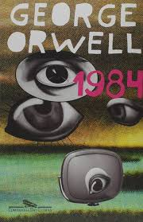
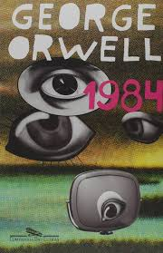

Uma biblioteca, na definição tradicional do termo, é um local em que são guardados livros, documentos tridimensionais, e demais publicações para o público estudar, ler, e consultar tais obras.
Desta forma, os três objetivos das bibliotecas são:
- A guarda dos livros e demais publicações em local livre de perigo, onde não sejam roubados, incendiados e demais perigos;
- A conservação, que não sejam estragados porque o público manuseia constantemente as obras, ou porque os documentos ficam úmidos, quentes e ou em situações similares;
- A organização segundo algumas regras para catalogar e arquivar as obras impressas, com intuito de que seja possível de se encontrarem de maneira imediata por meio de classificações como autor, assunto, ou diferente caraterística de importância.


 
